《活着》以大时代为背景，讲述徐福贵在社会变革中历经苦难，亲人接连离世， 最终与一头老牛相依为命的一生。基于其长篇悲剧的文本属性， 本设计确立严肃、沉闷的整体基调，以黑、白、红三色为基础语言： 黑与白构筑庄重的叙事底色，红色承担视觉冲击，并隐喻贯穿全书的血色悲哀。
文字内容主要引用自原著；人物图像素材取自张艺谋执导、改编自同名小说的电影《活着》， 仅作学习性质的编排研究之用。
封面以黑色打底，左上角标注首发年月，右下角注明体裁，中央并置中英文书名与作者； 底层叠加低透明度的“福”字——以日常喜庆的符号反衬压抑，构成全书的情绪入口。 内页页码采用方正小标宋简体，前段下标、后段上标，随版面节奏调整位置。

黑底之上以形状生成处理书名的重叠关系；底层低透明度的“福”字与醒目的中英文书名形成张力，喜庆符号被压暗，奠定全书压抑而庄重的基调。
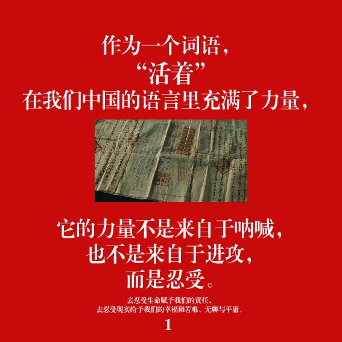
红底白字，以原著自序立论——“活着”的力量不来自呐喊与进攻，而是忍受。文字主导版面，文书图像居中起辅助，视觉冲击强烈而克制。
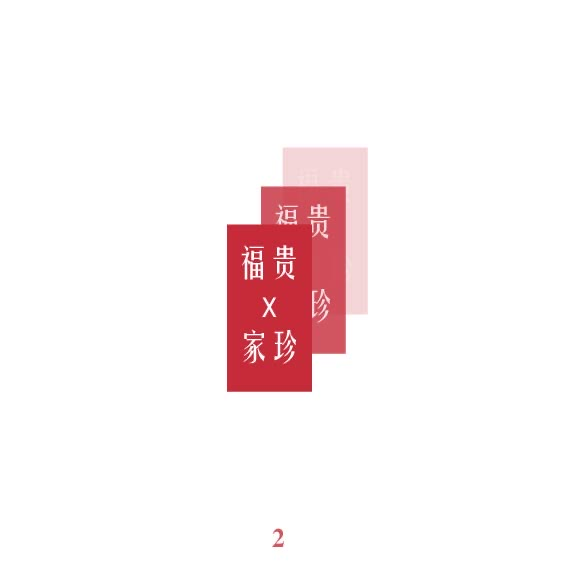
“福贵 × 家珍”以卡片形式重复并作渐变，由实入虚、层层退隐，为两位核心人物的命运关系作引。
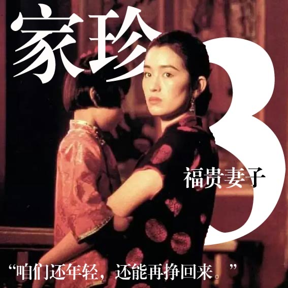
人物页——家珍。超大字号页码“3”与“福贵妻子”的标注稳定版面，剧照突出人物主体，引文“咱们还年轻，还能再挣回来”收束情绪。
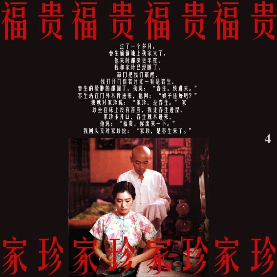
以家珍与福贵的红色名字封边，对称构图、图文各半，剧照居中。秩序化的版式与人物关系的对位互为呼应。
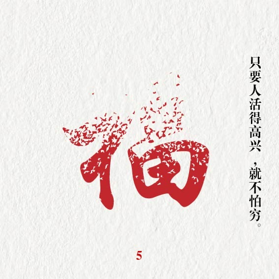
逐渐飞散、消解的“福”字，以水墨飞白的质感呼应主题：福贵自少爷而至落魄，亲人接连离散。配文“只要人活得高兴，就不怕穷”。
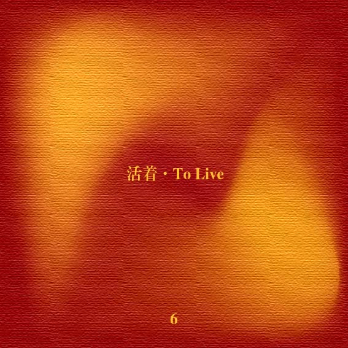
以橘红、橘黄为主色，取太阳般的暖调反衬灰暗时代；“活着 · To Live”居中静置，留白经营出呼吸感。
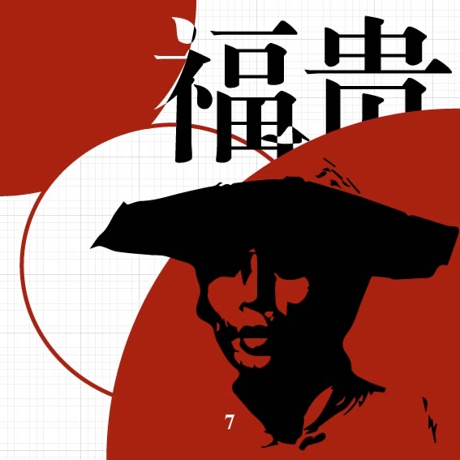
四分之一圆作对角线构图，网格线为底，绘制福贵的斗笠剪影；文字与图形重叠处作形状消除，于此处简介人物。
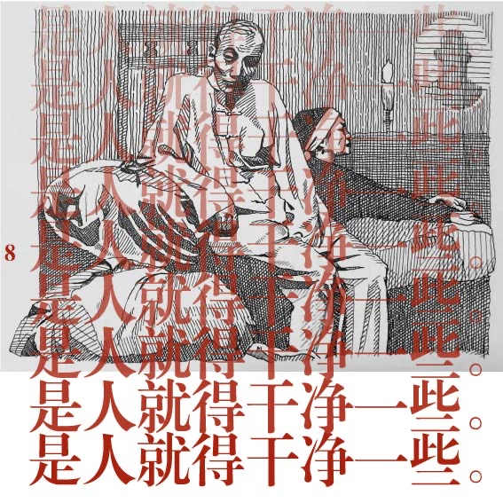
以福贵的线条插画为底，“是人就得干净一些”作堆叠渐变；低饱和度的背景反向凸显高饱和度的文字。
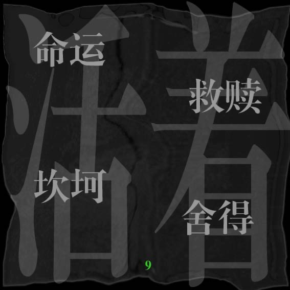
若隐若现的“活着”二字为底，命运、救赎、坎坷、舍得四个关键词以平行四边形顶点排布；模拟塑封质感，绿色页码点缀以避免版面死板。
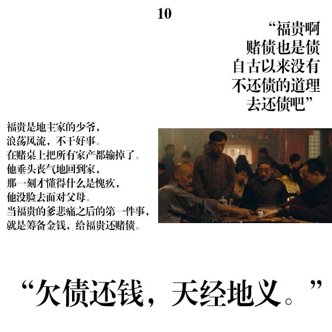
图文排版。赌桌剧照与“欠债还钱，天经地义”互证，叙述福贵败尽家产、垂头丧气而后醒悟的转折。
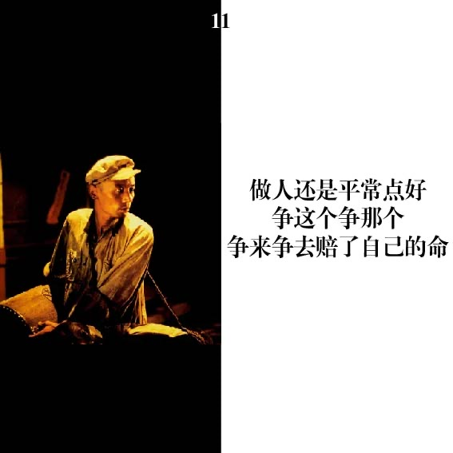
图文对称排版，左图右文。暖光中独坐的福贵与“做人还是平常点好”相呼应，情绪沉静内敛。
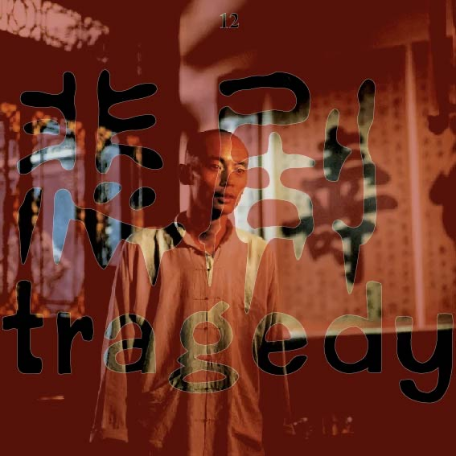
前景以“悲剧 / tragedy”作字体镂空设计，透出福贵肖像；中英文字形经过再设计，结构与图像彼此咬合。
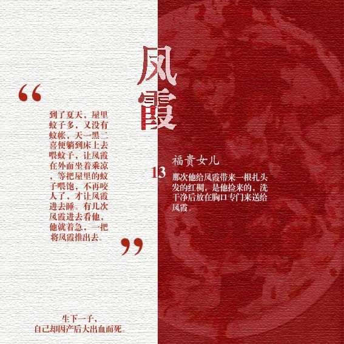
人物页——凤霞，福贵之女。红白以七比九分割，刻意打破传统对称，借色彩与文字排布重新求得画面的和谐。
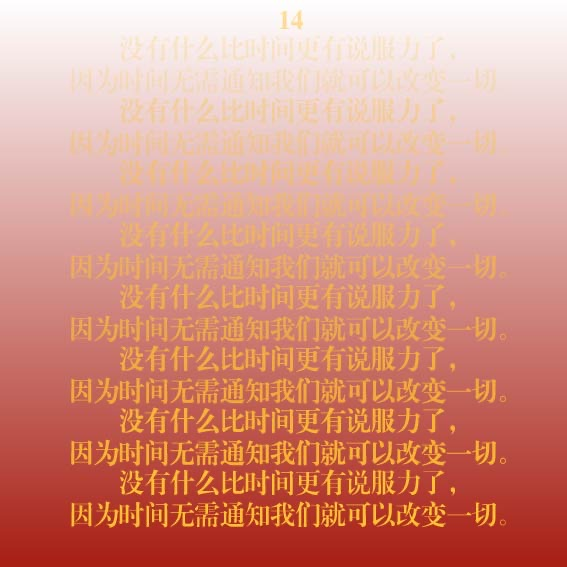
渐变效果。“没有什么比时间更有说服力了”逐行由虚至实、由暗及亮，以排版本身演绎时间的累积与不可逆。
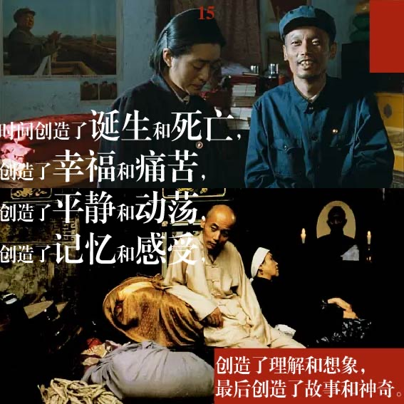
图文排版。多帧剧照拼贴，承接“创造了诞生和死亡，幸福和痛苦……”的排比，铺陈命运的宽幅。
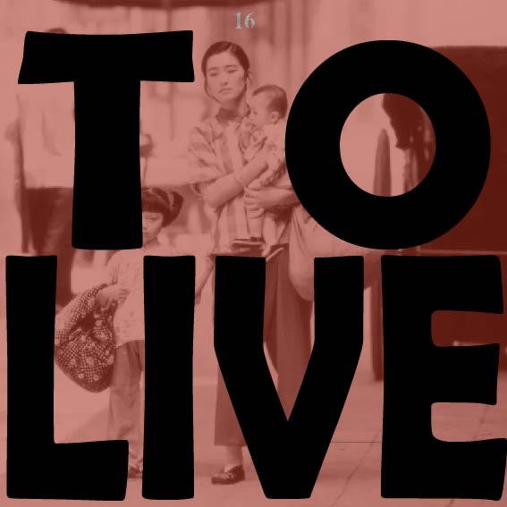
图文排版。巨型“TO LIVE”黑色字形压覆于母与子的剧照之上，字与图的负形相互渗透，张力直接。
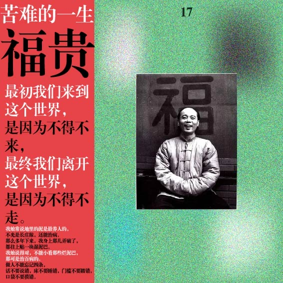
主色取红配绿，于绿色区域做黑、白、蓝的溶色处理以求画面调和；“苦难的一生 · 福贵”，黑白肖像与“福”字并置收束。
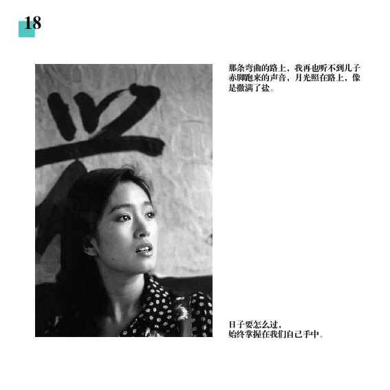
图文排版。黑白人物肖像与“兴”字相映，青色页码作冷调点缀，平衡整体的红与暖。
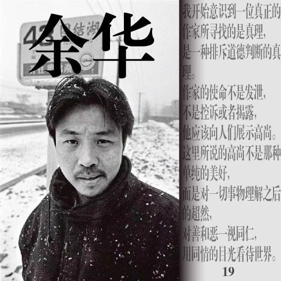
图文排版。以余华雪中的纪实黑白肖像收尾，配“作家所寻找的是真理……用同情的目光看待世界”，将叙事归还至写作者本身。
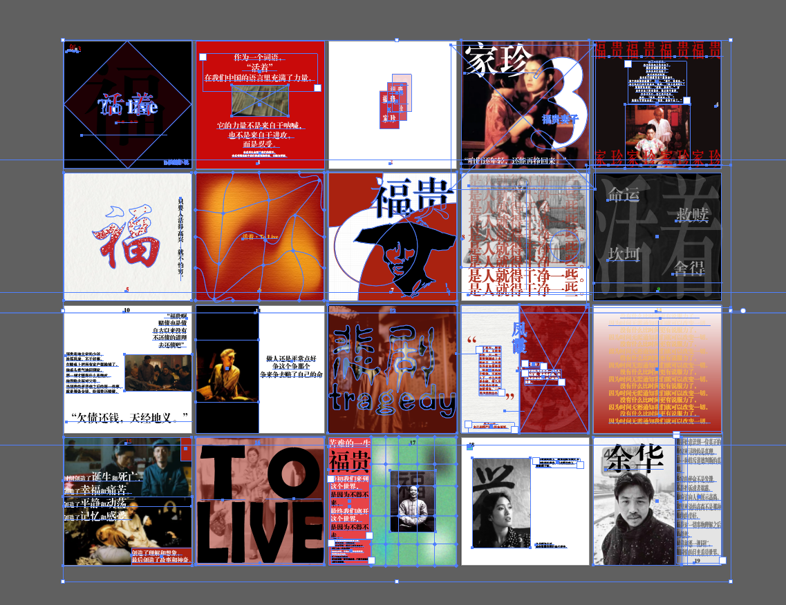
排版工作界面下的全书跨页总览，呈现自封面至末页的节奏编排与色彩分布——制作过程的痕迹，亦是整体把控的凭据。
- 色彩
- 黑 · 白 · 红为基础，局部引入橘、绿作情绪调节
- 页码字体
- 方正小标宋简体，前段下标、后段上标
- 构成手法
- 形状生成 · 形状消除 · 镂空 · 渐变 · 网格
- 文本来源
- 引自余华《活着》原著
- 图像来源
- 电影《活着》（张艺谋导演），仅作编排研究